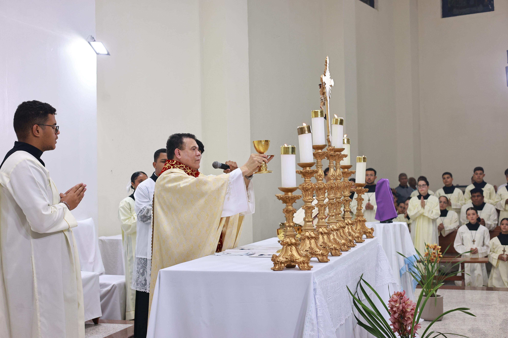
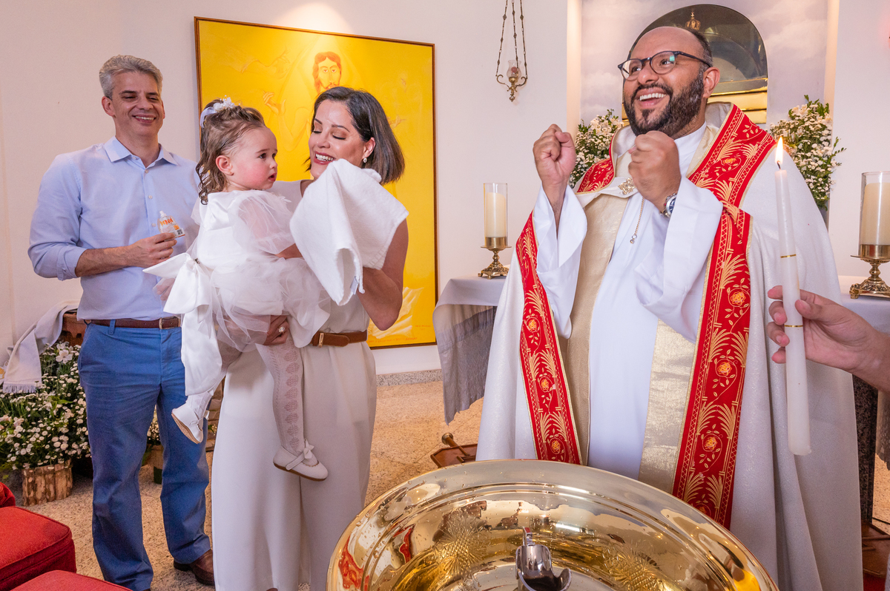
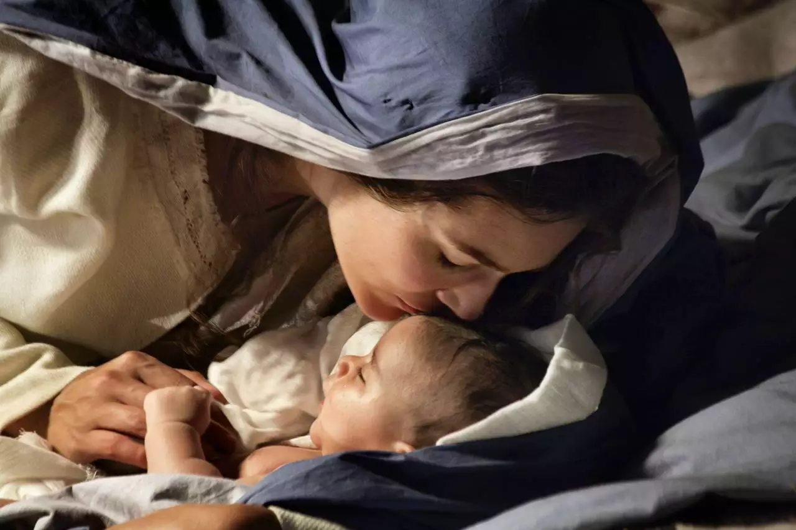
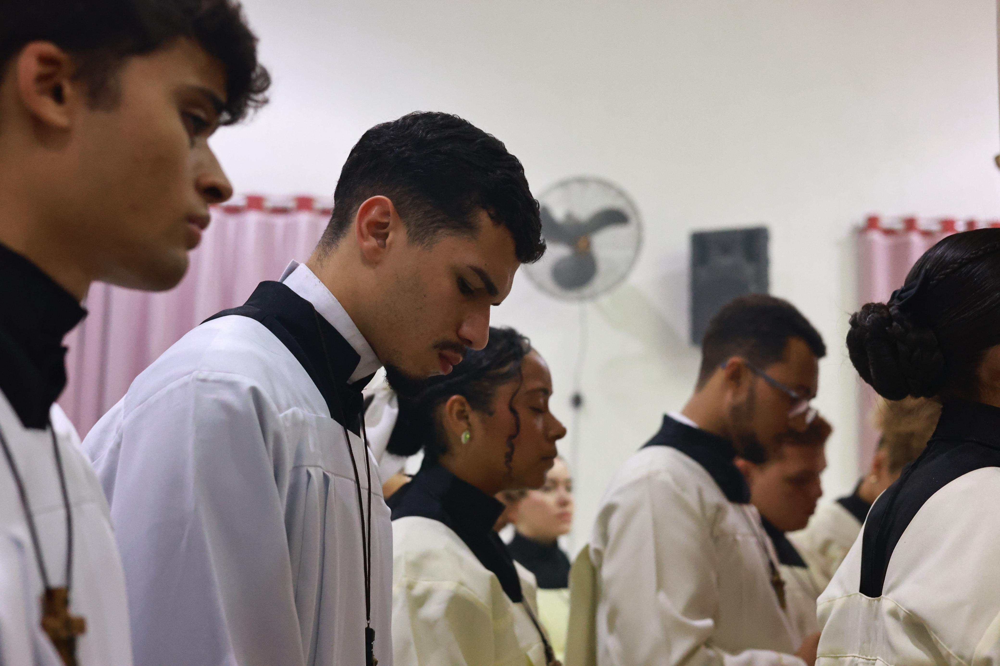
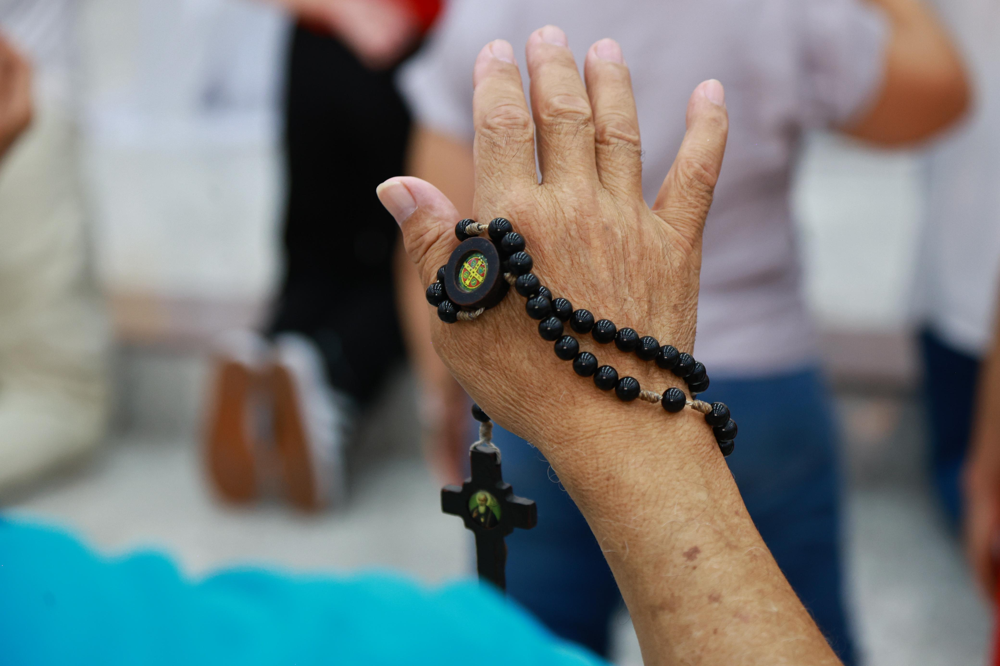
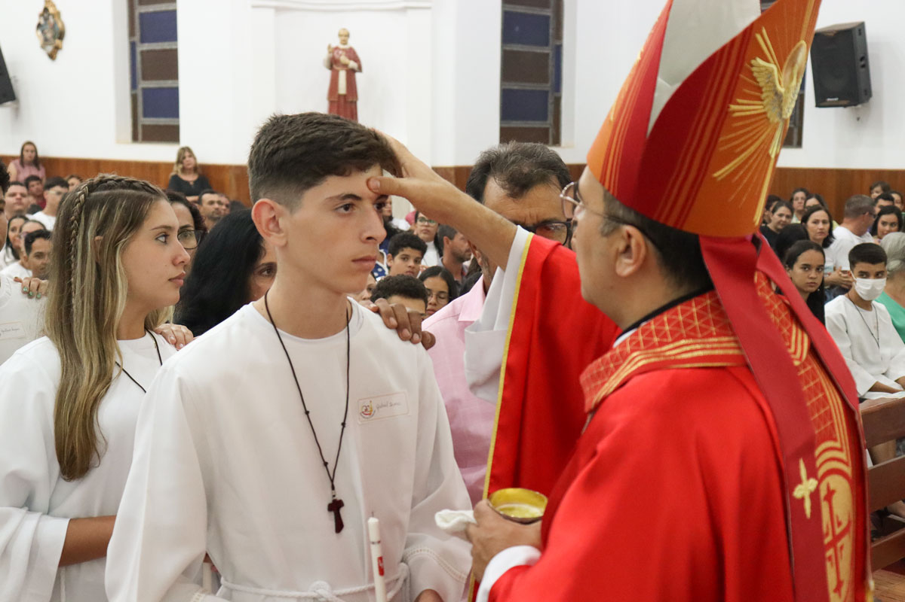
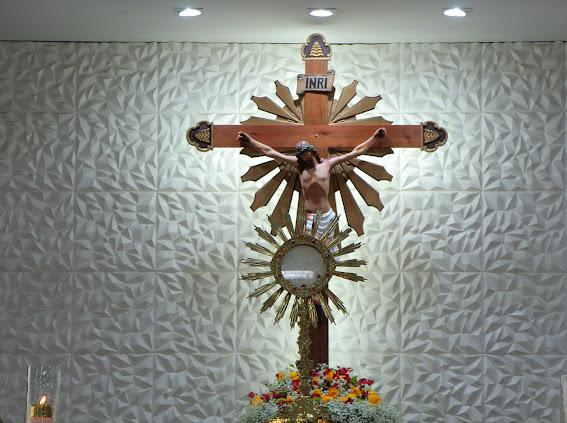
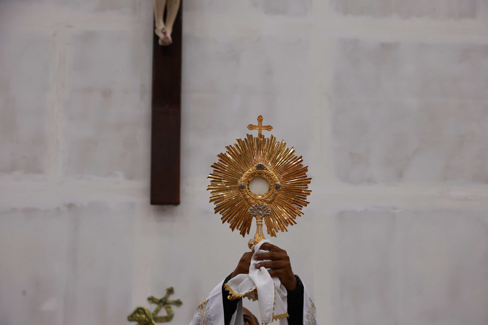

O que é a Eucaristia?
A Eucaristia é o sacramento do Corpo e Sangue de Cristo. Nela, Jesus se faz presente e nos alimenta com sua vida. É o centro da vida cristã, onde celebramos o sacrifício de amor de Jesus por toda a humanidade.
Conheça os sacramentos e ensinamentos da Igreja Católica através de imagens e reflexões que fortalecem nossa fé e nos aproximam de Deus.
A Eucaristia é o sacramento do Corpo e Sangue de Cristo. Nela, Jesus se faz presente e nos alimenta com sua vida. É o centro da vida cristã, onde celebramos o sacrifício de amor de Jesus por toda a humanidade.

O Batismo é a porta da vida cristã. É através dele que somos libertos do pecado original e nos tornamos filhos de Deus. O batismo marca o início de nossa jornada de fé e nos integra à comunidade cristã.

Maria é o maior exemplo de fé e obediência a Deus. Ela é nossa intercessora e sempre nos leva a seu Filho. Sua vida de humildade e amor nos inspira a seguir os passos de Jesus com confiança e esperança.

Pela confissão, recebemos o perdão de Deus e a paz interior. Um reencontro sincero com a misericórdia divina. É um momento de renovação espiritual onde podemos nos reconciliar com Deus e com nós mesmos.

O casamento é uma aliança sagrada entre homem e mulher. Nele, Deus se faz presente no amor do casal. É um compromisso de amor, fidelidade e doação mútua que reflete o amor de Cristo pela Igreja.

A oração é um diálogo com Deus. É através dela que fortalecemos nossa fé e encontramos consolo nas dificuldades. Na oração, abrimos nosso coração a Deus e experimentamos sua presença amorosa em nossas vidas.

Participar da Missa é viver a comunhão com Jesus e com a comunidade. É renovar nossa fé semanalmente. Na celebração eucarística, nos unimos como corpo de Cristo para louvar, agradecer e receber as bênçãos divinas.

A Crisma fortalece os dons do Espírito Santo em nós. É um chamado à maturidade na fé cristã. Através deste sacramento, somos confirmados como discípulos de Cristo e recebemos a força para testemunhar nossa fé.

A cruz é sinal de amor, entrega e salvação. Nela, Jesus nos mostrou o caminho do perdão e da vida eterna. A cruz nos lembra do sacrifício supremo de Cristo e nos convida a carregar nossa própria cruz com fé e esperança.

Os santos são modelos de vida cristã. Suas histórias nos inspiram a viver com fé, coragem e amor ao próximo. Eles nos mostram que é possível viver uma vida santa e dedicada a Deus, independentemente de nossas circunstâncias.
